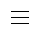
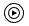
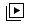

<!DOCTYPE html>
<html lang="kr">
  <head>
    <meta charset="UTF-8" />
    <meta name="viewport" content="width=device-width, initial-scale=1.0" />
    <!-- 제목 -->
    <title>YouTube</title>
    <!-- 아이콘 설정 -->
    <link rel="icon" href="../image/youtube/header.youtube_icon.png" />
    <!-- css 적용 -->
    <link rel="stylesheet" type="text/css" href="../css/yotube_clone.css" />
    <!-- 폰트적용 -->
    <link rel="stylesheet" type="text/css" href="../css/youtube_font.css" />
  </head>

  <!-- oocs 방식 css 중심 클래스 생성후 태그에 넣는 방식-->

  <body>
    <!-- 어사이드 -->
    <aside class="aside_shape">
      <div class="container_center aside_img_margin_top cursor_pointer">
        
      </div>
      <div class="aside_img cursor_pointer">
        
        <p class="aside_img_margin_top">홈</p>
      </div>
      <div class="aside_img cursor_pointer">
        
        <p class="aside_img_margin_top">shorts</p>
      </div>
      <div class="aside_img cursor_pointer">
        
        <p class="aside_img_margin_top">구독</p>
      </div>
      <div class="aside_img cursor_pointer">
        
        <p class="aside_img_margin_top">Youtube Mu...</p>
      </div>
      <div class="aside_img cursor_pointer">
        
        <p class="aside_img_margin_top">나</p>
      </div>
      <div class="aside_img cursor_pointer">
        
        <p class="aside_img_margin_top">오프라인 저...</p>
      </div>
    </aside>
    <!-- 헤더 -->
    <div id="main_group" style="position: fixed; width: 100%">
      <header id="header" class="headerimg_center">
        <!-- 유튜브 로고 -->
        <a href="youtube_clone.html">
          <div class="container_center cursor_pointer">
            
          </div>
        </a>
        <!-- 유튜브 검색창 -->
        <div id="search_out_shape">
          <div id="space"></div>
          <div id="search_shape">
            <div id="search_form">
              <button id="search_event_btn" type="button">
                
              </button>
              <input id="search_btn_text" type="text" placeholder="  검색" />
              <button id="keyboard_btn" type="button">
                
              </button>
            </div>
            <button id="search_btn" class="cursor_pointer" type="button">
              
            </button>
          </div>
          <button id="mic_btn" class="container_center cursor_pointer">
            
          </button>
        </div>
        <!-- 우측 아이콘 -->
        <div class="container_center" style="margin-right: 80px">
          
          
          
        </div>
      </header>
    </div>
    <!-- 메인 페이지 -->
    <main id="main_thumb">
      <!-- 유튜브 썸네일-->
      <!-- 자바스크립트로 생성 -->
    </main>

    <!-- 자바스크립트 적용 -->
    <script async src="../js/youtube_clone.js"></script>
  </body>
</html>
